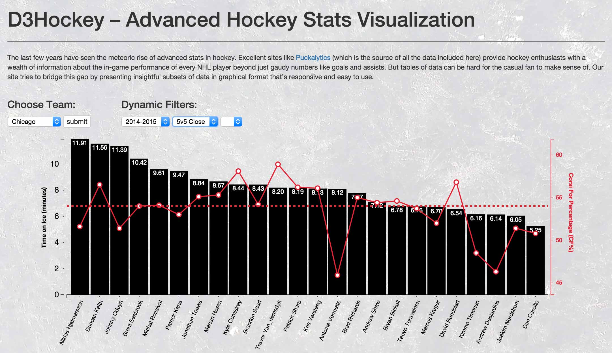

Projects: Feb 2015 – Feb 2016
What follows below is an overview (get it?) of some early projects I’ve worked on.
|  |
D3 HockeyD3 Hockey is a single-page app that uses Angular, Redis, and D3 (with a Rails back end) for the visualization of advanced hockey stats. The site takes informative subsets of data and presents them in a graphical format that’s responsive and easy to use. See my GitHub for more details. |
FoodieMy capstone project at Dev Bootcamp. I served as the project lead of a team of four aspiring web developers who built the site from scratch over eight days. Our stack: Ruby on Rails plus JavaScript for responsiveness on top of Bootstrap. My main responsibility was front-end and UI/UX design, though I contributed to several parts of the back-end as well, including database design and benchmarking, Google Maps API integration for the mobile version of the site, and search functionality. More information can be found on GitHub for more details. | |
GamenightMy “client project” at Dev Bootcamp. The core site was built in Ruby on Rails using Pure.css as the front-end framework by a team of three over a 48-hour sprint. My contributions to this project were mainly on the back end, including database setup, the games vertical, the comments vertical, the votes vertical, the mechanics vertical, search functionality, and AJAXifying everything. As usual, see GitHub for the (hastily written) code. | |
2048 CloneA clone of the immensely addictive 2048 game built with JavaScript, jQuery, and jQuery UI. It took me about a day to complete the project, which was designed using an object-oriented, MVC approach. | |
JavaScript SAT HangmanA semi-educational game of hangman where the possible words consist of the 100 most common SAT words. This was my very first experiment with using JavaScript for DOM manipulation. I used the Vanilla JavaScript framework to build this game. | |
My Personal WebsiteThe home of my personal blog and lots of other info about me. My site is also meant to demonstrate my design aesthetic and front-end coding abilities (for better or worse, no frameworks or templates were used in the construction of my site). | |
International Student Database for Loyola University MarylandA full-featured, user-friendly database application that I designed and developed from the ground up in MS Access with smatterings of SQL and VBA. The database served to better organize international student data, make this data easier to maintain, and automate the generation of complex biannual reports. |
{kind=link}